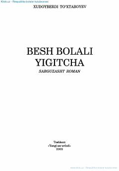

BBUrush davrida besh nafar ukasini yolg'iz katta qilayotgan o'smir Orifjonning ta'sirli sarguzashtlari.
Ushbu sarguzasht roman urush yillarida ota-onasidan judo bo'lib, besh nafar ukasini yolg'iz o'zi katta qilayotgan Orifjon ismli o'smirning og'ir, ammo ibratli hayot yo'li haqida hikoya qiladi. Asar bolalikning mashaqqatli davrida ham insoniylik, ezgulik va mas'uliyatni saqlab qolishning ahamiyatini yorqin aks ettiradi.